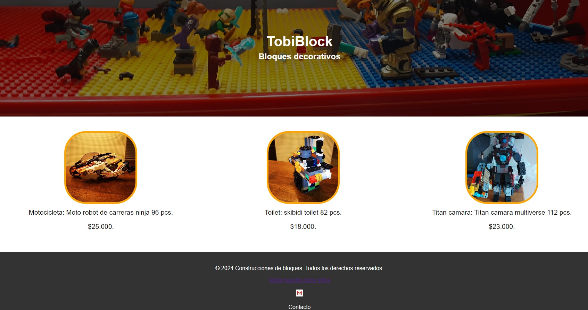
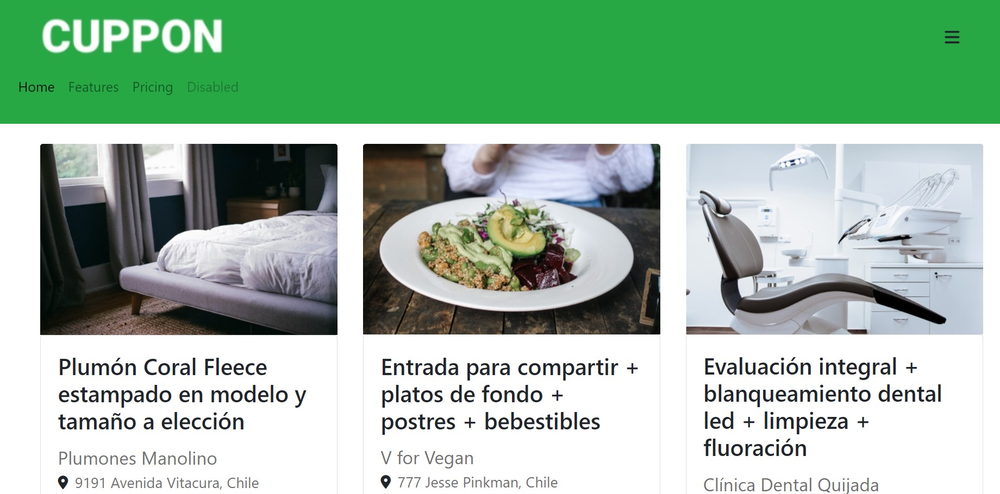
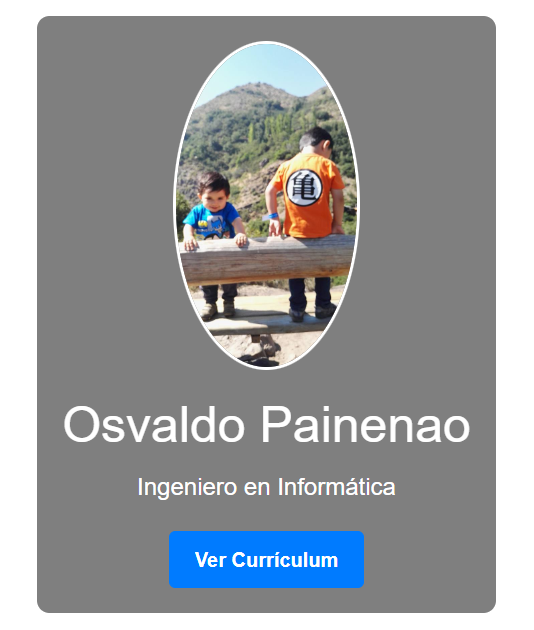

Sobre mí
Ingeniero Informático con 15 años de experiencia en diversos sectores, incluyendo telefonía, retail y banca. Especializado en bases de datos y desarrollo backend, cuento con un sólido historial en la optimización de sistemas y la implementación de soluciones tecnológicas eficientes. Mi formación incluye un título en Ingeniería Informática y un postítulo en Gestión de Proyectos. Mi objetivo es seguir aprendiendo y mejorando continuamente para ofrecer entregas de alta calidad y asesorar eficazmente a los clientes.
Mi Portafolio



Curriculum
